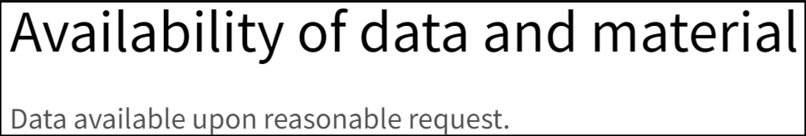

1 Introdução
Neste livro não vamos aprender sobre machine learning, eststística ou visualização.
O objectivo é aprendermos um conjunto de ferramentas, práticas e técnicas de gestão de projectos que tornarão os nossos projectos mais facilmente reprodutíveis, replicáveis e reastreáveis. Estas ferramentas e técnicas podem ser usadas desde o início do nosso projecto com um custo mínimo, de tal forma que quando terminarmos com a a nossa anállise, já temos o nosso projecto reprdutível. O nosso projecto será reprodutível simplesmente porque foi engenhado, desde o início, para ser reprodutível.
Há dois conceitos principais neste livro que devemos ter em mente em todo o momento:
- DRY: Don’t Repeat Yourself (não te repitas);
- WIT: Write IT down (passa a escrito).
E esta é a melhor forma para criar pipelines de análise reprodutíveis.
1.1 Para quem é este livro?
Este livro destina-se a qualquer pessoa que use dados brutos para criar qualquer tipo de resultado com base nesses dados brutos. Pode ser um simples relatório trimestral, por exemplo, no qual os dados são usados para tabelas e gráficos, ou um artigo científico para uma revista com revisão por pares ou até mesmo uma aplicação interativa Web. Não importa, pois o processo é, essencialmente, muito semelhante:
- Obter os dados;
- Limpar os dados;
- Escrever código para analisar os dados;
- Apresentar os resultados num produto final.
Assumimos alguma familiaridade com a linguagem de programação R, os exemplos apresentados e as ferramentas usadas são específicas para R. No entanto os conceitos aqui apresentados podem ser aplicados a outras linguagens.
1.2 Qual o objectivo deste livro
O objetivo deste livro é tornar o processo de análise de dados o mais fiável, rastreável e reproduzível possível, e fazendo isto por desenho. Ou seja, quando concluirmos a nossa análise, está tudo pronto.
Não queremos gastar tempo, que geralmente não temos, para reescrever ou formatar uma análise para a tornar reprodutível depois de concluída. Já sabemso que não o vamos fazer! Depois de concluirmos uma análise temos de iniciar um novo projecto. Se precisarmos de executar de novo uma análise mais antiga (por exemplo, porque os dados foram atualizados), na altura preocupar-nos-emos com isso, certo?
Esperemos que no futuro, nos lembremos de cada peculariedade do nosso código e saibamos qual o script a executar em cada ponto do processso, quais os comentários que estão desatualizados e podem ser ignorados com segurança, que recursos dos dados precisam ser verificados (e quando precisam ser verificados) e assim por diante… É melhor esperar que o futuro seja um trabalhador mais diligente do que nós somos agora!
Daqui em diante, referir-nos-emos a um projecto reprodutível como um pipeline de análise reprodutível, ou RAP (nas suas siglas em inglês “Reproducible Analytival Pipeline”), para abreviar. Há duas formas de criar esse RAP: ou tems a sorte de contar com algujém cujo trabalho é o de transformar o nosso código num RFAP, ou então temos de ser nós mesmos a fazê-lo. E esta segunda opção é geralmente a mais provável. O problema é que geralmente não o fazemos. Estamos sempre com pressa para chegar aos resultados e não pensamos em tornar o processo reproduzível. Isso ocorre porque pensamos que tornar o processo reproduzível leva tempo e que esse tempo é melhor gasto trabalhando na análise em si. Mas essa é uma concepção errada, por duas ordens de razão.
Primeiro a utilização das técnicas discutidas neste livro não con somem muito tempo. Podermos ver, na verdade não são coisas que acrescentamos à análise, mas fazem parte da própria análise e também ajnudam na gestgão do projecto. E algumas dessas técnicas nos ajudarão a economizar tempo (especialmente nos testes) e dores de cabeça.
Depois a análise nunca é feita de uma só vez. Apenas coisas mais simples serão feitas apenas uma única vez, como extrair um va lor de uma base de dados. Ainda assim, é provável que depois de darmos esse número, sejamos solicitados para obtermos a variação desse número (por exemplo desagregando por uma ou várias variáveis). Ou talvez nos peçam para atualizarmos aquele número passado meio ano. Assim, procuramos gauardar a consulta SQL em algum script a que possamos recorrer para darmos uma resposta consistente. Mas e no caso de análises mais complexas? manter o mesmo script pode ser um bom princípio (quando temos esse script) mas não é suficiente.
Não raras vezes, estamos na situação em que, temos de atualizar um relatório, passado um ano, em que estão envolvidas várias pessoas no processo e só a parte da recolha dos novos dados já é uma complicação. Porque uns têm os dados duma maneira e outros doutra… Bom, a primeira lição (e se calhar a mais importante) deste livro é: ao iniciarmos a construção de um RAP, devemos garantir que falamos com todas as pessoas que vão estar envolvidas no processo.
1.3 Pré-requisitos
Devemos estar familiarizados com o ambiente de programação em R. Ao longo deste livro, vamos assumir que usamos o R em vários projectos e que queremos melhorar não só o uso da linguagem em si mas principalmente como devemos gerir projectos complexos. Sabemos o que são pacotes e como instalá-los, já escrevemos algumas funções em R, sabe mos o que são loops, e sabemos quais são as estruturas de dados que podemos usar (como por exemplo as listas). Também estamos familiarizados com a visualização, processamento e análise de dados, embora estes não sejam temas do livro.
Não usaremos qualquer tipo de Graphical User Interface (GUI) mas sim um IDE como o RStudio. Isto porque a interação com um GUI não é reprodutível. O nosso objectivo é o de escever código que possa ser executado não-interactivamente por uma máquina. Isto porque uma condição necessária para que um fluxo de trabalho seja reprodutível e designado como RAP é que o fluxo de trabalho possa ser executado por uma máquina, automaticamente, sem nenhuma intervenção humana. Esta é a segunda lição para a criação de RAPs: não deve haver nenhuma intervenção humana necessária para obter os resultados depois que o RAP for iniciado. Se conseguirmos isto, o nosso fluxo de trabalho provavelmente é reprodutível ou, pelo menos, poderá ser reproduzido mais facilmente do que se exigir alguma manipulação por um ser humano em algum momento do ciclo.
1.4 Reproducibilidade
Um projecto reprodutível é aquele que pode ser executado repetidamente por qualquer pessoa e sem esforço (ou com um esforço mínimo). Porém, há diferentes níveis de reproducibilidade, como veremos nesta secção. Vejamos alguns requisitos que um projectodeve ter para ser um RAP.
1.4.1 Usar ferramentas open-source
O código-fonte aberto é um requisito rígido para a reproducibilidade.
Não há “se” nem “mas”. Não nos referimos apenas ao código que escrevemos para o nosso artigo de pesquisa/relatório/análise. Todo o ecossistema que usamos para digitar o nosso código e criar o fluxo de trabalho tem de ser open-source.
Se é código escrito num programa proprietário, como STATA, SAS ou SPSS, então não é um RAP. Não importa se o código está bem documentado, escrito e disponível num sistema de controlo de versões (internamente na nossa empresa ou aberto ao público). Esse projeto simplesmente não é reproduzível. Por quê? Porque, num horizonte de tempo longo o suficiente, não há como reexecutar o nosso código com a mesma versão exata da linguagem de programação proprietária e na mesma versão exata do sistema operacional que foi usado no momento em que o projeto foi desenvolvido.
1.4.2 Dependências ocultas que poem em causa a reproducibilidade
Mas há outro problema: vamos supor que temos escrito um bom fluxo de trabalho, testado exaustivamente, bem documentado, disponibilizado no Github (e vamos supor que os dados estão também disponíve is para download gratuito e ainda que o artigo é de acesso aberto). Vamos supor ainda que o código foi escrito em R ou Python. Podemos então dizer que estga análise ou estudo é reprodutível? Bem, se a análise foi executada num sistema operacional proprietário, então não é reprodutível. Isto porque o sistema operacional em que o código é executado também pode influenciar os resultados que o pipeline gera. Há algumas particularidades nos sistemas operacionais que podem fazer com que certas coisas funcionem de forma diferente. É certo que, na prática, isso raramente é um problema, mas acontece1, especialmente se estivermos a trabalhar com aritmética de ponto flutuante de alta precisão, como acontece no setor financeiro, por exemplo.
Felizmente, não há necessidade de mudarmos de sistema operacional para lidarmos com este problema. Podemos usar o Docker como salvaguarda.
1.4.3 Requisitos para um RAP
Resumidamente, para termos algo verdadeiramente reprodutível, tem de respeitar os eguintes pontos:
- Obviamente, o código-fonte deve estar disponível e ser exaustivamente testado e documentado (e é por isso que usaremos o Git e o Github);
- Todas as dependências devem ser fáceis de encontrar e instalar (vamos lidar com isso usando ferramentas de gerenciamento de dependências);
- Ser escrito com uma linguagem de programação de código aberto (ferramentas nocode como o Excel são, por padrão, não reprodutíveis porque não podem ser usadas de forma não interativa, e é por isso que usaremos a linguagem de programação R);
- O projeto precisa ser executado em um sistema operacional de código aberto (felizmente, podemos lidar com isso sem ter de instalar e aprender a usar um novo sistema operacional, graças ao Docker);
- Obviamente, os dados e o documento/relatório também precisam estar acessíveis, se não publicamente, como é o caso duma investigação, então dentro da nossa empresa. Isso significa que o conceito de “scripts e/ou dados disponíveis mediante solicitação” deve ir para o lixo.
1.5 Há diferentes tipos de reproducibilidade?
Vamos dar um passo atrás: vivemos no mundo real e, no mundo real, há algumas restrições que estão fora do nosso controle. Essas restrições podem impossibilitar a criação de um RAP verdadeiro, portanto, às vezes, precisamos nos contentar com algo que pode não ser um RAP verdadeiro, mas uma segunda ou até terceira melhor opção.
No que se segue, vamos supor o seguinte: na discussão em baixo, o código é testado e documentado, portanto, vamos discutir apenas o código que executa o pipeline em si.
O pior pipeline reprodutível seria algo que funcionasse, mas somente na nossa máquina. Isso pode ser simplesmente devido ao fato de termos codificado caminhos que só existem no nosso laptop. Qualquer pessoa que queira executar novamente o pipeline precisará alterar os caminhos. Isto é algo que precisa ser documentado em um README, o que presumimos ser o caso, então é isso. Mas talvez esse pipeline só seja executado no nosso laptop porque o ambiente computacional que estamos a u sar é difícil de reproduzir. Talvez estamos a usar um software, mesmo que seja um software de código aberto, que não seja fácil de instalar (qualquer pessoa que tenha tentado instalar pacotes R no Linux que dependem do pacote {rJava} percebe este exemplo).
Portanto, um pipeline menos mau seria aquele que pudesse ser executado mais facilmente em qualquer máquina semelhante à nossa. Isso poderia ser feito não usando caminhos absolutos codificados e fornecendo instruções para configurar o ambiente. Por exemplo, no caso do R, isso poderia ser tão simples quanto fornecer um script chamado install_deps.R que seria uma chamada para install.packages(). Poderia ser assim:
install.packages(c("package1",
"package2",
etc))Neste caso, o problema é que precisamos de nos certificar de que as versões corretas dos pacotes sejam instaladas. Se o nosso script usa {ggplot2} versão 2.2.1, os usuários devem instalar essa versão também e, ao executar o script acima, a versão mais recente de {ggplot2} será instalada. Talvez isto não seja um problema, mas pode ser que o nosso script use uma função da versão 2.2.1 que já não esteja disponível na versão mais recente (ou talvez o nome tenha sido alterado, ou talvez tenha sido modificado de alguma forma e não forneça exatamente o mesmo resultado). Quanto mais pacotes o script usar (e quanto mais antigo elee forem), maior será a probabilidade de que alguma versão do pacote não seja compatível. Há também a questão da própria versão do R. De modo geral, as versões recentes do R parecem não ser tão más a executar códigos mais antigos escritos em R.
Mas importar sublinhar que quando corremos um código antigo e não nos dá erro, não significa que os resultados sejam exactamente iguais. Pode haver casos que a mesma função devolva resultados diferentes em diferentes versões do R. Ou seja, não basta contar com a estabilidade da própria linguagem de programaçãoao longo do tempocomo con dição suficiente para a reproducibilidade.
Isto significa que a reproducibilidade é um continuum e , dependendo das restrições que tenhamos, o nosso projecto pode ser ‘não muito reprodutível’ ou ‘totalmente reprodutível’. Assim, o grau de reproducibilidade do nosso projecto pode ser influenciado por:
- Versão da linguagem de programação usada;
- Versões dos pacotes da referida linguagem de programação utilizada;
- Sistema operacional e sua versão;
- Versões das bibliotecas do sistema subjacente (que geralmente andam de mãos dadas com a versão do sistema operacional, mas não necessariamente).
- E até mesmo a arquitetura de hardware na qual executamos todo o software.
Portanto, quando dizemos que a “reproducibilidade é um continuum”, significa que podemos implementar o nosso projecto de modo a que nenhum, um, dois, três ou todos os items anteriores são considerados, para que seja reprodutível.
Esta não é uma ideia nova ou inédita. Peng (2011) já discutiu este conceito a que chamou de “espectro de reproducibilidade”. Na segunda parte deste livro, voltaremos a esta ideia que designaremos como “iceberg de reproducibilidade”.

Mesmo quando falamos de arquitectura de hardware, esta também não é imutável. A Apple mudou a arquitectura dos seus compuradores recentemente, e no futuro a Microsoft também pode pressionar os fabricantes OEM a criarem mais computadores baseados em ARM.
Mas então como podemos gerir todos estes riscos e equilibrar a necessidade imediata de resultados com a necessidade futura de executar novamente um projeto antigo? E se a retoma desse projeto antigo nunca for necessária no futuro?
É aqui que este livro nos pode ajudar, ao usarmos as técnicas discutidas aqui, tornaremos fácil e rápida a configuração dum projecto desde o início para que seja realmente reprodutível. Ao criarmos o projecto desta forma também garantirá que evitaremos erros e resultados errados. Será mais fácil e rápido iterar e melhorar o nosso código, colaborar com terceiros e confiar nos resultados do nosso pipeline. Mesmo que ninguém volte a executar o nosso código, poderemos beneficiar das boas práticas aqui recomendadas.
https://github.com/numpy/numpy/issues/9187↩︎